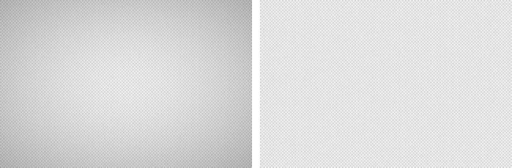
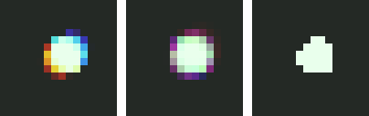
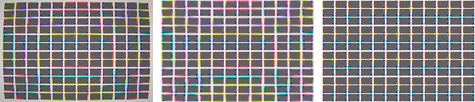

Chapter 1 built a lens with three flaws, each governed by one coefficient we chose. Every capture since has carried those flaws along politely — the corners a stop dark, the corner dots wearing rainbows, the straight lines bowed. Now the pipeline pays the debt. This chapter inverts all three, and because we wrote the forward model, the inversions can be checked against it: each correction is measured, and each leaves a residual with a reason.
Placement is half the chapter. The three corrections do not go in one place; they interleave with the stages already built, and each position has an argument behind it. The pipeline, as of this chapter:
linearize → defects → vignetting ⁶·¹ → white balance → demosaic
→ CA ⁶·² → distortion ⁶·³ → color matrix → ...
6.1Vignetting: division, early
The falloff was multiplicative on the way in, so it is a division on the way out — one gain per photosite, computed from the model:
code/pxp/lenscorrect.pydef unvignette(mosaic, lens):
"""Divide the falloff back out, photosite by photosite.
Exact by construction — we know the model. The cost is not
accuracy but noise: the corners get their brightness back and
their noise amplified by the same factor, which for the kit lens
is 1.8x (almost a stop) at the extreme corner. Vignetting
correction is always a trade against corner noise; some
processors deliberately correct only partway."""
height, width = len(mosaic), len(mosaic[0])
out = []
for y in range(height):
row = []
for x in range(width):
gain = 1.0 / lens.falloff((x + 0.5) / width,
(y + 0.5) / height)
row.append(mosaic[y][x] * gain)
out.append(row)
return out
It runs on the mosaic, ahead of white balance, for a reason worth spelling out. Chapter 3’s estimators read the whole frame as evidence about the light; hand gray-world a frame whose corners are a stop dark and the corners vote for a darker, subtly different illuminant than the center. On our simulator the falloff is the same for all three channels, so the vote is only dimmer, not tinted — but real sensors are worse off: their microlenses and filters shade color-dependently toward the edges, which is why production pipelines apply per-channel lens-shading maps at this same early position. A disclosed simplification, then: our vignetting is achromatic, and the one-multiplier-per-site structure below is what survives contact with the real, per-channel version.

6.2Chromatic aberration: registration, not resurrection
The corner dots of Chapter 1 smeared into rainbows because the lens magnifies each wavelength differently. Undoing that after capture faces a limit set at the sensor, and this section’s job is to locate it precisely.
The sensor folded each channel’s band of wavelengths into one number per photosite. A correction can therefore move each channel as a whole — but within red’s band, the lens placed 560 nm light and 660 nm light at different radii, and those are now the same number. Per-channel warping can re-register the three channels; nothing can unsmear a single channel from the inside. To move a channel as a whole we need its representative wavelength:
code/pxp/lenscorrect.pydef effective_wavelength(channel):
"""One wavelength standing in for a whole filter band: the
response-weighted mean. The lens smeared each channel across its
band; a single-wavelength correction is therefore an
approximation of our own forward model, and the residual it
leaves is measured in the chapter."""
response = SENSITIVITIES[channel].samples
weighted, total = 0.0, 0.0
for band in range(SAMPLE_COUNT):
weighted += WAVELENGTHS[band] * response[band]
total += response[band]
return weighted / total
and the warp aligning red and blue onto green:
code/pxp/lenscorrect.pydef correct_ca(image, lens):
"""Align red and blue to green.
For an output pixel at radius r, green's content came from
r times m_green; we want the red plane's value for that same
scene point, which red recorded at r times m_red of its own
source radius. The scale solving that is a fixed point;
eight iterations pin it far below quantization for any sane
lens.
Green is untouched: CA correction moves two channels to meet
the third, not three channels to meet the truth — that is
distortion correction's job, next."""
green_wl = effective_wavelength(1)
planes = [[[image.get(x, y)[c] for x in range(image.width)]
for y in range(image.height)] for c in range(3)]
for channel in (0, 2):
wavelength = effective_wavelength(channel)
def source_scale(r2, wavelength=wavelength):
scale = 1.0
for _ in range(8):
scale = (_magnification(lens, r2, green_wl)
/ _magnification(lens, scale * scale * r2,
wavelength))
return scale
planes[channel] = _resample_radial(planes[channel],
source_scale)
out = Image(image.width, image.height, channels=3)
for y in range(image.height):
for x in range(image.width):
out.set(x, y, [planes[c][y][x] for c in range(3)])
return out
Two placements are significant here. CA correction runs after demosaicing, because it moves channels independently and there are no independent channels until the mosaic is unwoven. And it runs before the color matrix, because the matrix mixes R, G and B at each pixel — mix misaligned channels and the fringes stop being a red-plane problem the warp can reach and become part of every output channel permanently.
Measured on a corner point light, the registration does its job emphatically: the red centroid sits 0.45 px from green’s before correction and 0.04 px after; blue goes from 0.43 px to 0.08 px, the small remainder being the price of a single wavelength standing in for a band. But look at what the corrected dot still is:

That middle panel is the section’s finding. Lateral CA correction — ours, Lightroom’s, anyone’s — is registration, and registration alone. The residual halo is dispersion inside each channel’s band, geometrically identical in kind to defocus blur, and reachable only by deconvolution-style sharpening (Chapter 8 will pick this thread up). If you have ever corrected CA on a real photograph and wondered why a faint glow stayed behind at the edges, you have seen the middle panel before.
6.3Distortion: the first resampling
The geometry itself comes last. The lens delivered to each pixel the scene content from a radially scaled position; correction fetches it back. There is one wrinkle. Forward distortion scaled each position by an amount that depends on its radius, and to undo it we need the radius of the original point — but that is exactly what we are solving for, so the equation chases its own tail and cannot be rearranged into a direct formula (it has no closed form, in the jargon). The escape is iteration: guess the answer, run it through the equation to get a better guess, and repeat until the guess stops moving. That settling value — the one the equation hands back unchanged — is a fixed point, and here it converges in a handful of steps:
code/pxp/lenscorrect.pydef correct_distortion(image, lens):
"""Straighten the geometry: every channel warped by the inverse
of green's magnification. The inverse has no closed form — the
magnification depends on the radius we are solving for — but the
same eight-iteration fixed point settles it."""
green_wl = effective_wavelength(1)
def source_scale(r2):
scale = 1.0
for _ in range(8):
scale = 1.0 / _magnification(lens, scale * scale * r2,
green_wl)
return scale
out = Image(image.width, image.height, channels=3)
planes = []
for c in range(3):
plane = [[image.get(x, y)[c] for x in range(image.width)]
for y in range(image.height)]
planes.append(_resample_radial(plane, source_scale))
for y in range(image.height):
for x in range(image.width):
out.set(x, y, [planes[c][y][x] for c in range(3)])
return out
Both this warp and CA’s share an engine, and the engine contains a decision this book has not had to make until now: the source position is almost never a pixel center, so the value must be read between pixels:
code/pxp/lenscorrect.pydef _sample_bilinear(plane, x, y):
"""Read a plane between its pixels: mix the four neighbors by
coverage. Soft but stable — the workhorse kernel of every
geometry correction shipped, and the reason corrected images
are very slightly blurrier than uncorrected ones."""
height, width = len(plane), len(plane[0])
x0 = int(x // 1)
y0 = int(y // 1)
fx, fy = x - x0, y - y0
xa = min(width - 1, max(0, x0))
xb = min(width - 1, max(0, x0 + 1))
ya = min(height - 1, max(0, y0))
yb = min(height - 1, max(0, y0 + 1))
top = plane[ya][xa] * (1 - fx) + plane[ya][xb] * fx
bottom = plane[yb][xa] * (1 - fx) + plane[yb][xb] * fx
return top * (1 - fy) + bottom * fy
Bilinear interpolation is the pipeline’s first resampling, and resampling is a genuine subject — the kernel chosen here decides how much softness every geometric operation costs, and fancier kernels (bicubic, Lanczos) buy sharpness at the price of ringing. Chapter 9 gives the topic its own section when the image is scaled for output; for now, note the structure of the cost: the corrected image below is measurably straighter and very slightly softer than what came out of the lens, because every one of its pixels is now a weighted average of four. Geometry corrections are never free.

One practical note real tools surface as a checkbox: correcting barrel distortion fetches content from inside the frame, so the result keeps its full field of view with mild stretching at the edges; correcting pincushion reaches outside it, and the missing content forces a crop. Our kit lens barrels, so nothing was lost — the choice between “distortion correction” and “keep full frame” in a raw editor is this geometry speaking.
6.4Sidebar: corrections without the source code
Lensfun, and knowing versus fitting
Everything above ran on coefficients we wrote ourselves — simulator privilege in its purest form. A real processor gets them by fitting: someone photographs test charts through a specific lens at specific settings, fits parametric models — polynomial radial distortion of the same shape as ours, per-channel CA polynomials, a radial vignetting falloff — and publishes the numbers. The open-source world pools this in the Lensfun database, which is how darktable and RawTherapee straighten thousands of lenses they have never seen; manufacturers ship the same idea as correction metadata embedded in the raw file (DNG stores it as opcode lists), which is why some lenses look impossibly clean in software: the “lens” you judge is lens plus mandatory correction profile. The structure of this chapter survives the translation intact — same models, same placements, same residuals — with one addition: a fitted model is itself approximate, so real corrections carry both this chapter’s residuals and the fit’s. When Chapter 10 runs real raw files, Lensfun is the analogue of everything pxp.lenscorrect got for free.
The lens is undone: field flat, channels registered, lines straight, and the costs of each written down — corner noise, an incompressible halo, a bilinear kernel’s softness. The image is geometrically trustworthy and colorimetrically labeled, and it is still, stubbornly, linear: proportional to photon counts from a world whose brightness range no display can hold. Chapter 7 is tone — gamma, curves, and the art of losing information where nobody will miss it.